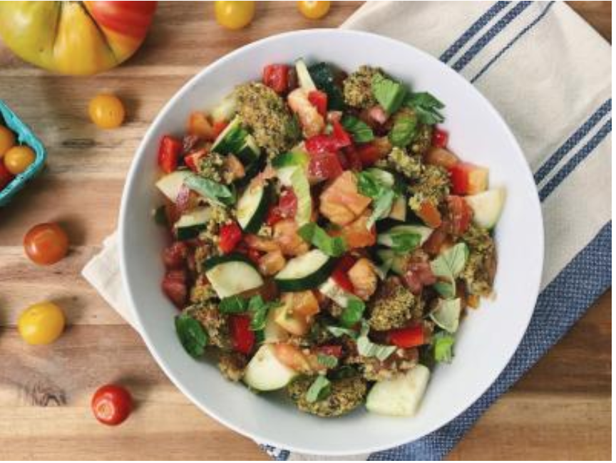
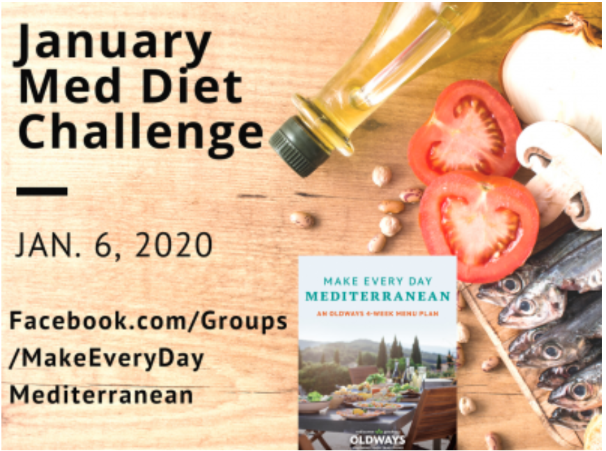
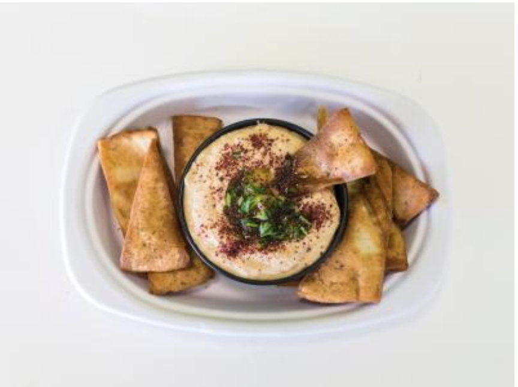

goodness
goodnessHome> Blog
BLOG
DECEMBER 2019
DECEMBER 30, 2019
MEDITERRANEAN VEGETARIAN MEALS
The heart and soul of the Mediterranean Diet is whole plant foods, that is, an assortment of splendid, seasonal fruits and vegetables alongside...
READ MORE
DECEMBER 16, 2019
MEDITERRANEAN-IZING YOUR FAVORITE DESSERTS: ADD NUTS, WHOLE GRAINS, AND FRUIT TO MAKE YOUR FAVORITE DESSERTS MED-FRIENDLY
The Mediterranean Diet is largely based on nuts and seeds, whole grains, healthy fats, and an abundance of fruits and vegetables. Having said that,...
READ MORE
DECEMBER 11, 2019
5 TRAVEL TIPS YOU HAVEN'T HEARD YET, FROM A CULINARY TRAVEL EXPERT
Lost items, overstuffed luggage, sore feet—even the best-laid travel plans can be derailed! From Italy, to Greece, to Turkey and beyond, veteran...
READ MORE
DECEMBER 05, 2019
JOIN THE JANUARY MEDITERRANEAN DIET CHALLENGE
Get ready for a healthier, happier, more delicious 2020. Take part in our January Mediterrranean Diet Challenge! Follow along with us as we go...
READ MORE
DECEMBER 02, 2019
MEDITERRANEAN DIPS & SPREADS
In the countries surrounding the Mediterranean , family dinners and large gatherings often consist of an assortment of small plate dishes—known as...
READ MORE
Olways
266 Beacon Street Suite 1
Boston , MA 02116
TEL 617-421-5500
FAX 617-421-5511
info@oldwaysspt.org